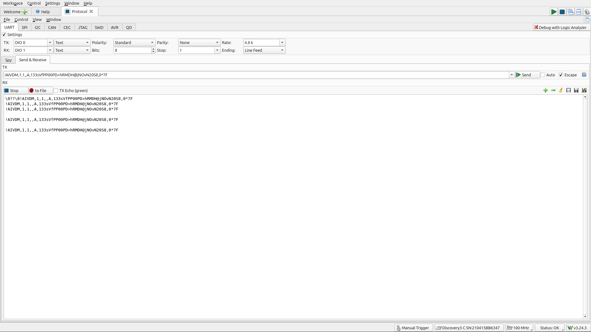
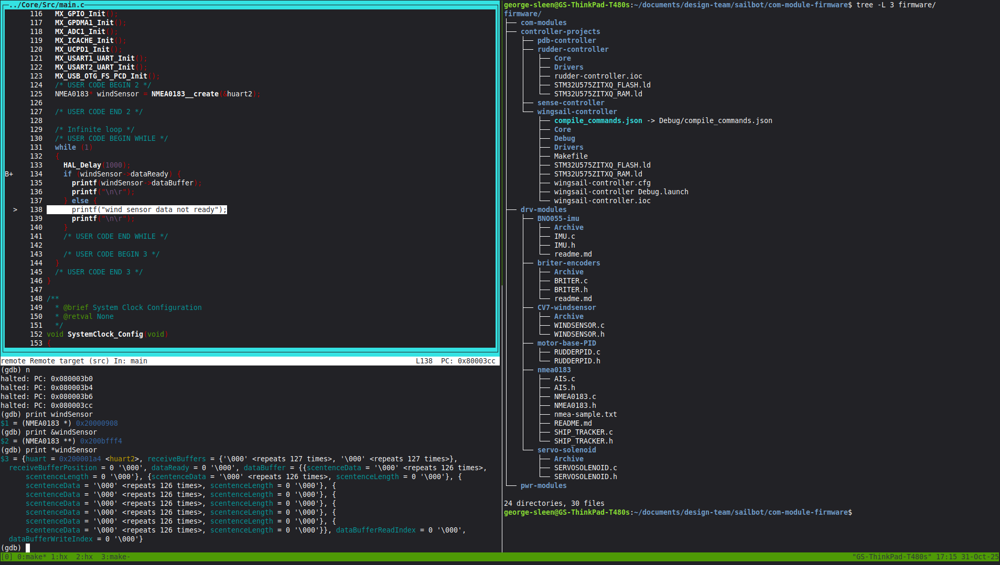

UBC Sailbot
UBC Sailbot builds an autonomous sailboat called Polaris. I joined the team in September 2025 and work on the embedded side: the shared communication firmware that ties the subsystems together, and the PLRS-IMU heading sensor fusion system (covered on its own page).
Communication module firmware
The boat's subsystems (rudder controller, wingsail controller, sensor module, power distribution) each run on STM32U575 Nucleo boards. The communication module firmware is the shared codebase for all of them.
I started on this codebase in October 2025, learning the team's STM32CubeIDE workflow and the Nucleo hardware. My early work sessions were spent getting UART printing to work and debugging I2C and NMEA protocol issues with an Analog Discovery 3.
UART loopback test on the Analog Discovery 3 protocol analyzer:

Debugging the wind sensor driver with GDB on the STM32:

Here is what I have contributed:
- NMEA0183 parsing for the LCJ CV7 wind sensor. I wrote typed parsers with structs so the data self-documents, instead of raw fixed-point integers with comments explaining how to decode them.
- Rudder link protocol. I designed a COBS-framed serial protocol that feeds the fused heading from the IMU to the rudder controller.
- Rudder equivalence analysis. When a teammate refactored the rudder control model, I did a forensic comparison and found two real bugs: a doubled integral increment and uninitialized state.
- Integration and branch management. I merged the wingsail, rudder, PDB, and sensor module branches into one coherent state, documented all branch tips, and wrote the git flow and testing workflow for the team.
- CI pipeline. I set up GitHub Actions for
.iocperipheral checking and host unit tests.
Repositories
- PLRS-IMU (separate page): PLRS-IMU project
- Communication firmware: github.com/UBCSailbot/com-module-firmware